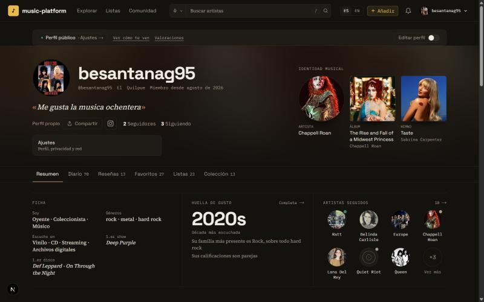
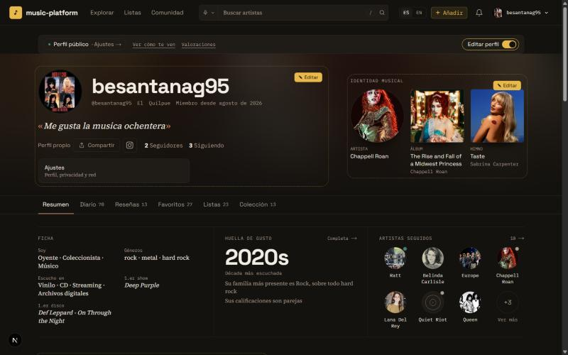
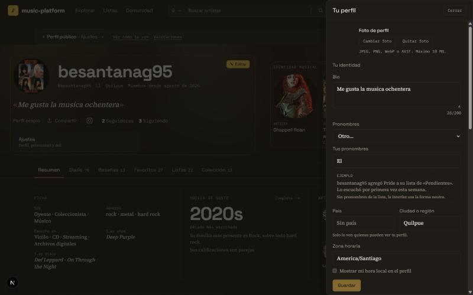
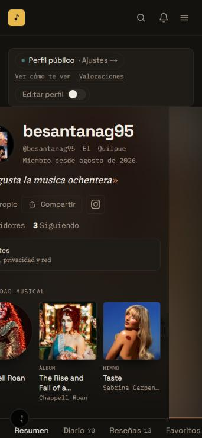

El perfil visto por su dueño
Auditoría con la sesión de @besantanag95 sobre la BD de pruebas, con el perfil rediseñado (Fases 1–3) y el modo edición. Sin guardar ningún cambio. Tres propuestas en el navegador, con los colores y tipografías actuales.
Cómo se ve hoy



Hallazgos
- Una barra aparte con cuatro cosas distintas. Encima de la cabecera, una caja con el estado («Perfil público · Ajustes →»), «Ver cómo te ven», «Valoraciones» y el interruptor «Editar perfil». En teléfono ocupa 137 px antes del nombre. «Valoraciones» no tiene relación con el perfil y ya está en el menú de usuario.
- Ajustes dos veces, con destinos distintos. El estado de la barra lleva a Privacidad; la tarjeta «Ajustes · Perfil, privacidad y red» dentro de la cabecera lleva a Perfil. La tarjeta además rompe la cabecera, que en el resto de vistas no tiene cajas.
- «Perfil propio» en lugar de una acción. Donde el visitante ve «Seguir», el dueño ve un texto gris que no hace nada. Las acciones del dueño (editar, ver como visitante) están en otra parte de la página.
- Solo tres bloques editables. Con el modo edición aparecen lápices en los datos de la cabecera, la Tarjeta de Identidad y «Empieza por aquí». La Ficha de la franja no tiene lápiz: se edita desde el panel de la cabecera, lejos de donde se ve.
- Un panel de 2.135 px con cinco editores y cuatro «Guardar». Foto, identidad, ficha, preguntas y enlaces van juntos en «Tu perfil»; cada parte se guarda por separado y la foto se sube sola, así que no queda claro qué se guardó.
- Nada indica qué no es público. El dueño ve mezcladas entradas, reseñas y listas públicas, solo para seguidores y privadas, sin ninguna marca. La única forma de saberlo es «Ver cómo te ven», que recarga la página.
- Ninguna sección ofrece agregar. Diario, Reseñas, Listas y Colección muestran «Ver todo», pero no «Registrar», «Escribir» ni «Nueva lista»: el dueño tiene que ir al botón «Añadir» del sitio o a otra página.
- Las solicitudes pendientes se ven solo en la tarjeta de Ajustes, como una píldora pequeña, y solo si hay alguna.
Error encontrado (afecta a todos, no solo al dueño)
El fondo de carátula de la cabecera sobresale 64 px (-inset-16) dentro de una sección con overflow-hidden. Esa sección sigue siendo desplazable por el navegador: al cerrar el panel de edición, el foco desplazó la cabecera 64 px a la izquierda a 390 px y el avatar quedó cortado. Se corrige con overflow-clip, sin cambiar el diseño.

Tres propuestas
A · Cabecera del dueño
Sin barra aparte: las acciones del dueño van donde el visitante tiene «Seguir» (Editar perfil, Ver como visitante, Compartir) y el estado «Público» va junto al nombre como enlace a Privacidad. Se quitan la tarjeta de Ajustes y «Perfil propio»; las solicitudes pendientes son una línea bajo los recuentos. Cada sección ofrece agregar («+ Registrar», «+ Nueva lista») y lo que no es público lleva una marca solo para el dueño. En edición, lápiz también en la Ficha y un panel corto por bloque con un solo «Guardar».
Abrir AB · Ver como
Una barra fina y fija bajo la cabecera del sitio con «Ver como: Tú · Seguidor · Público», el estado, Ajustes y el interruptor de edición. Cambiar de vista no recarga: oculta lo que esa audiencia no ve. Más potente para revisar la privacidad, pero suma una barra fija más (ya hay la del sitio y la de anclas) y exige calcular tres vistas.
Abrir BC · Por completar
La cabecera de A más una franja «Tu perfil · 5 de 7» con lo que falta (bio, Identidad musical, Ficha, Empieza por aquí, preguntas, enlaces), cada parte abre su editor; se oculta al completar o a mano. En un perfil nuevo, las secciones vacías son invitaciones con su acción. Útil para cuentas nuevas; en un perfil completo casi no aparece.
Abrir CComparación
| Hoy | A · Cabecera | B · Ver como | C · Por completar | |
|---|---|---|---|---|
| Controles del dueño | Barra en caja + tarjeta en la cabecera | En la fila de acciones de la cabecera | Barra fija propia | Como A |
| Entradas a Ajustes | Dos, a pantallas distintas | Una (el estado → Privacidad); el resto en el menú | Una en la barra | Como A |
| Saber qué no es público | Solo con «Ver cómo te ven» (recarga) | Marca por elemento | Vista por audiencia sin recargar | Marca por elemento |
| Agregar desde el perfil | No | «+» en cada sección | «+» en cada sección | «+» e invitaciones en vacío |
| Edición | 3 bloques, panel de 5 editores | 4 bloques (con Ficha), un panel por bloque | Como A | Como A |
| Altura antes del nombre (390 px) | 137 px de barra | 0 | Barra fija de ~100 px | 0 |
| Costo | — | Medio | Alto (tres vistas) | Medio, sobre A |
Recomendación
A · Cabecera del dueño, con la franja «por completar» de C solo mientras falte algo (y que se pueda ocultar). Resuelve la duplicación de Ajustes, el texto muerto «Perfil propio», la falta de marcas de audiencia y de acciones para agregar, y deja la edición en paneles cortos. B es mejor herramienta de privacidad, pero agrega una barra fija y bastante costo; «Ver como visitante» de A cubre el caso más común. El error de desplazamiento de la cabecera se corrige en la primera fase, sea cual sea la elección.
Decisiones abiertas
- Marcas de audiencia: solo el dueño las ve, en Diario, Reseñas, Listas y Colección. Recomendado: sí.
- Franja «por completar»: incluirla (solo con algo pendiente y ocultable) o dejarla para después. Recomendado: incluirla en la última fase.
- «Valoraciones» de la barra: quitarla del perfil (sigue en el menú de usuario). Recomendado: quitarla.
- Solicitudes pendientes: una línea bajo los recuentos en lugar de la píldora de la tarjeta de Ajustes. Recomendado: sí.